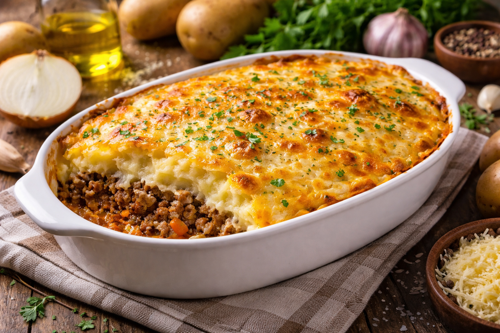

🍽️ Pastel de Papa
Una de mis comidas favoritas y que me enseño mi mamá. Clásica, rica y perfecta para compartir.

🧾 Ingredientes
- 🥔 1 kg de papas
- 🥩 500 g de carne picada
- 🧅 1 cebolla
- 🧄 2 dientes de ajo
- 🥚 2 huevos
- 🧂 Sal y pimienta
- 🧀 Queso rallado (opcional)
👨🍳 Preparación
- Hervir las papas hasta que estén blandas.
- Hacer un puré y condimentar.
- Saltear la cebolla y el ajo.
- Agregar la carne y cocinar.
- Condimentar con sal y pimienta.
- Colocar una capa de puré.
- Agregar la carne.
- Cubrir con más puré.
- Agregar queso rallado.
- Gratinar en el horno.
💡 Tip: Podés agregar aceitunas o huevo duro para darle más sabor.